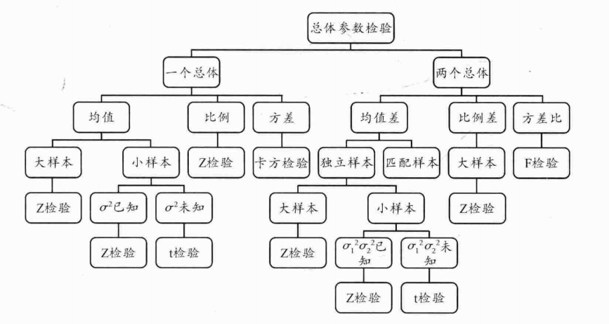

假设检验（hypothesis testing）
定义
假设检验的基本思想是“归谬”或“证伪”，是“小概率事件”原理，其统计推断方法是带有某种概率性质的反证法。小概率思想是指小概率事件在一次试验中基本上不会发生。反证法思想是先提出检验假设，再用适当的统计方法，利用小概率原理，确定假设是否成立。
1.原假设（null hypothesis）-定义
又称虚无假设、零假设，是研究者想收集证据予以反对的假设，用\(H_0\)表示。
2.研究假设（alternative hypothesis）-定义
又称对立假设或备择假设，与原假设互斥，是研究者想收集证据予以支持的假设，用\(H_1\)或\(H_a\)表示。
如“\(a\)与\(b\)无差异”，设\(μ_1\)和\(μ_2\)表示\(a\)和\(b\)的均值。
那么原假设可以表示为：\(H_0：μ_1=μ_2\)
研究假设可以表示为：\(H_1：μ_1≠μ_2\)
这种假设称为无方向的假设。在无方向的假设中，我们判断均值之间存在差异，但是不能够预测均值之间谁大谁小的具体关系。相比而言，有方向的假设直接表明总体之间的关系，如\(μ_1＞μ_2\)或者\(μ_1＜μ_2\)。原假设总是有符号\(＝、≥\)或\(≤\)，而研究假设总是有符号\(≠、＜\)或\(＞\)。
举例:
在一项关于汕大男女学生学习方式的差异的调查中，提出“汕大男女学生学习方式具有显著差异”的假设。
1、原假设案例：汕大男女学生学习方式没有显著差异。
2、研究假设：汕大男女学生学习方式具有显著差异。
3.显著水平（significance level）-定义
显著水平常用\(a\)表示，代表研究人员决定拒绝原假设的信心，通俗地讲，由于随机误差而造成这种极端差异的概率等于\(a\)，而\(a\)足够小，是个小概率事件，因而研究人员有充分的信心拒绝原假设，进而接受存在差异的研究假设。
显著水平由研究者决定，显著水平的设定需要考虑多种因素，如研究领域、研究目的、研究对象、研究内容等。
举例:
4.检验统计值与临界值
研究人员根据样本计算的一个值来判断或检验误差概率是否低于显著水平，这个值叫做检验统计值。当“低于某个显著水平”时拒绝原假设，在分布图中等于说尾端的面积要小于该面积，这个面积或区域叫作“临界区域”或“拒绝区域”，界定该区域的值叫作临界值。
如果检验统计值的绝对值小于显著水平对应的临界值，我们称检验统计值落在接受区域，这时就要接受原假设；反之，如果检验统计值的绝对值大于临界值，我们称为检 验统计值落在拒绝区域。这时就要拒绝原假设。
从随机误差的角度看，对于前一种情况，由随机误差造成差异的概率大于研究人员设置的最大随机误差概率，因此可认为所观察到的差异是由随机误差造成的，而不存在真正的差异，而对于后一种情况，则可认为确实存在真正的差异。
举例:
5.单测检验与双侧检验-定义
如果研究假设不但指出差异，而且还指出差异的方向（\(H1：μ1＞μ2\)或者\(H1：μ1＜μ2\)），这时的假设检验称之为单尾检验或单侧检验（one-tailed test）。
如果研究假设仅仅强调差异的存在，而不指出差异的方向（\(H1：μ1≠μ2\)），这时假设检验称为双尾检验或双侧检验（two-tailed test）。
举例:
6.假设检验的两类错误
假设检验的四种情况：
| 可能的选择 | |||
| 不拒绝原假设 | 拒绝原假设 | ||
| 原假设的真实性质 | 原假设为真 | 原假设真实（群体之间没有差异）时，做出不拒绝原假设的正确选择，发生这种情况的概率为\(1-a\)。 | 发生\(a\)错误，即弃真错误（第Ⅰ类错误）。原假设为真实时（没有差异），缺拒绝了原假设（认为存在差异），发生这种情况的概率为\(a\)。 |
| 原假设为假 | 发生\(β\)错误，即取伪错误（第Ⅱ类错误）。原假设是虚假时（存在差异），但没有拒绝原假设（认为没有差异），发生这种情况的概率为\(β\)。 | 原假设虚假（实际上存在差异）时，拒绝了原假设，发生的概率为\(1-β\)（也称为把握度） | |
当通过减小\(a\)，而避免犯第Ⅰ类错误的时候，犯Ⅱ类错误的风险就会增加；同样，如果为了避免犯第Ⅱ类错误就会增加a，也就增加了犯第Ⅰ类错误的风险。解决这一矛盾的唯一方法是仔细考虑两类错误带来的后果。试考虑下面几种情境：
● 垃圾邮件过滤。原假设为任何一封电子邮件都不是垃圾邮件。垃圾邮件过滤插件会寻找线索（如邮件中包含“促销”等关键词）推翻原假设。a错误表示一些不是垃圾邮件的电子邮件也屏蔽了，β错误表示垃圾邮件通过筛选进入了你的收件箱里。考虑到漏收一封重要邮件的损失要大大超过收到一封广告邮件的代价，多数人可能会更倾向于容忍β错误。
● 癌症筛查。原假设是没有患上癌症。诊查的作用就是发现可疑的结果，进而推翻原假设。按常理，医生和病人总是愿意容忍一定程度的a错误（身体没有问题却被错误诊断），而尽力避免出现β错误（癌症没有诊断出来）。
● 打击恐怖分子。原假设为某人不是恐怖分子。a错误意味着将无辜的人送进监狱，β错误意味着恐怖分子仍然逍遥法外，社会随时处于被恐怖袭击的危险中。因此这时候无论是a错误还是β错误都是不可以容忍的。
7.假设检验的流程
● 提出原假设和研究假设。
● 确定适当的检验统计量，并计算其数值。
● 决定接受何种假设。